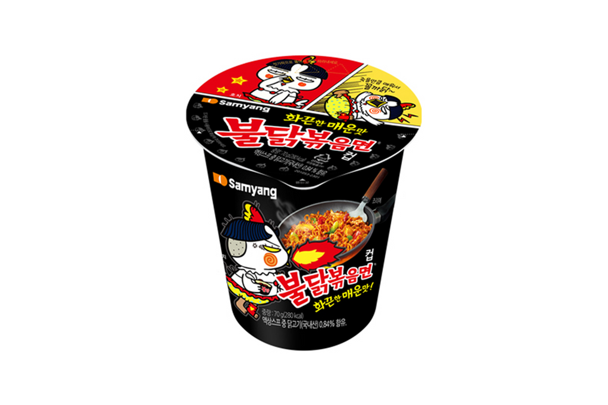

불닭볶음면
삼양 불닭볶음면 — 매운맛 K-라면 아이콘, 멀티팩 기념품.
삼양 불닭볶음면은 오리지널·카르보나라·치즈 등 맛 변형이 많은 매운 볶음 라면입니다. 마트·편의점·다이소에서 봉지 멀티팩(5개입)으로 기념품처럼 사 가는 외국인이 많습니다.
조리 시 물을 버리고 소스를 비비는 타입입니다. 액상 소스는 압력으로 터질 수 있어 지퍼백에 한 번 더 넣으세요. 매운맛에 약하면 카르보·치즈부터 추천합니다.
삼양 불닭볶음면은 오리지널·카르보나라·치즈 등 맛 변형이 많은 매운 볶음 라면입니다. 마트·편의점·다이소에서 봉지 멀티팩(5개입)으로 기념품처럼 사 가는 외국인이 많습니다.
조리 시 물을 버리고 소스를 비비는 타입입니다. 액상 소스는 압력으로 터질 수 있어 지퍼백에 한 번 더 넣으세요. 매운맛에 약하면 카르보·치즈부터 추천합니다.
사는 팁
구매 팁 이마트·홈플러스 라면 특가가 편의점보다 저렴한 경우가 많습니다. ‘삼양 불닭’ 표기를 확인하세요.